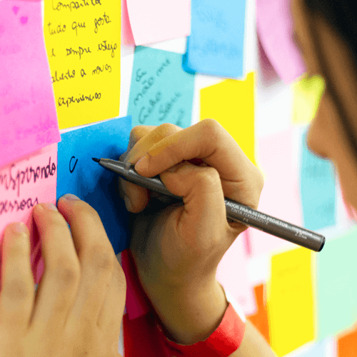
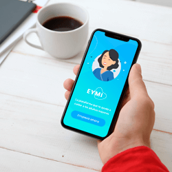
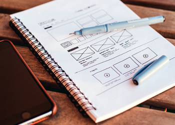

Mapa de empatía y arquetipo
Acerca de mí
Hola, soy Patricia Prince, diseñadora UX/UI, periodista y especialista en comunicación organizacional. En este sitio encontrarás una muestra de mi trabajo y mis intereses.
El periodismo y las comunicaciones corporativas me han resultado una base importante para adentrarme en UX Research, UX Writing y, en general, al UX/UI Design. Utilizo todas las herramientas necesarias para crear la mejor experiencia para los usuarios.
¡Te invito a contactarme!
UX / UI
En esta sección encontrarás casos de estudio relacionados con diseño UX y diseño UI en los que apliqué metodología y herramientas de acuerdo con el problema planteado.


Eymi App

Mapa de empatía y arquetipo

Mapa de empatía y arquetipo

Mapa de empatía y arquetipo

Mapa de empatía y arquetipo
Habilidades técnicas
Comunicaciones
Diseño UX/UI

Como diseñadora UX/UI, lo más importante es ofrecer una experiencia positiva y recordable. Es una forma de comunicación entre un producto o servicio, y el usuario, que podría garantizar el éxito de una empresa.
La comunicación efectiva se pone de manifiesto, a través de un proyecto con objetivos claros, interacción sencilla, pero no simple, y con atractivo que invite al usuario a vivir una y otra vez esa relación con el producto o servicio.
Periodismo
He trabajado más de 10 años como periodista en medios de comunicación y empresas corporativas, dedicada a diseñar productos editoriales y digitales, desde su contenido hasta su imagen y promoción. También he producido eventos en los que la experiencia positiva es el resultado más importante y destacado.
En el entorno de la Publicidad y el Marketing, he tenido la oportunidad de coordinar equipos de trabajo multidisciplinarios, entre ellos periodistas, diseñadores gráficos y fotógrafos, orientados en generar contenidos para proyectos estratégicos de las empresas.
Comunicación Corporativa
En empresas retail y diarios, también he diseñado planes de comunicación enfocados en la promoción de la marca. Los objetivos principales en los proyectos desarrollados han sido fortalecer la identidad, dar a conocer la cultura y mejorar el clima laboral, desde el punto de vista interno.
Desde el punto de vista externo, para las empresas ha sido importante estrechar relaciones con las comunidades, favorecer la educación de los niños y jóvenes, y apoyar proyectos sociales que busquen mejorar la calidad de vida de las personas.
Contacto
Si quieres saber más sobre el trabajo que realizo, ¡Escríbeme! Con gusto te responderé pronto.🙂